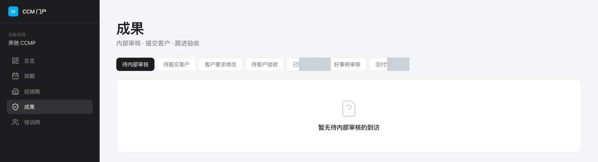
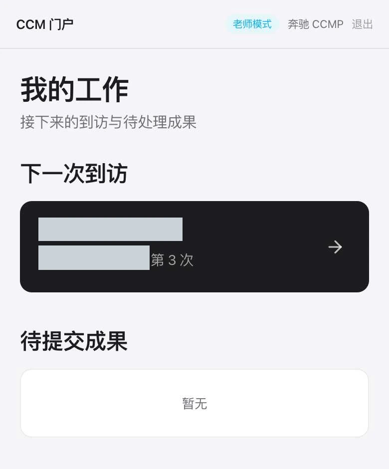
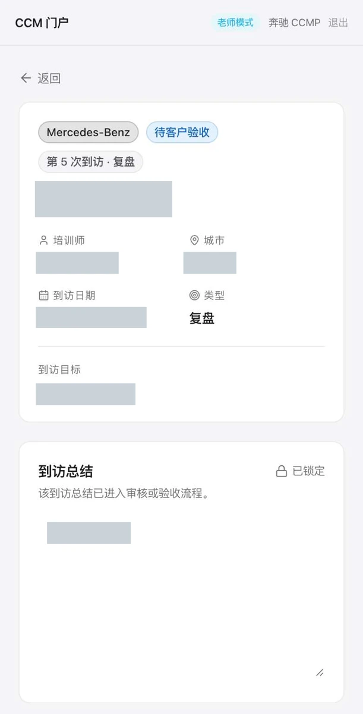
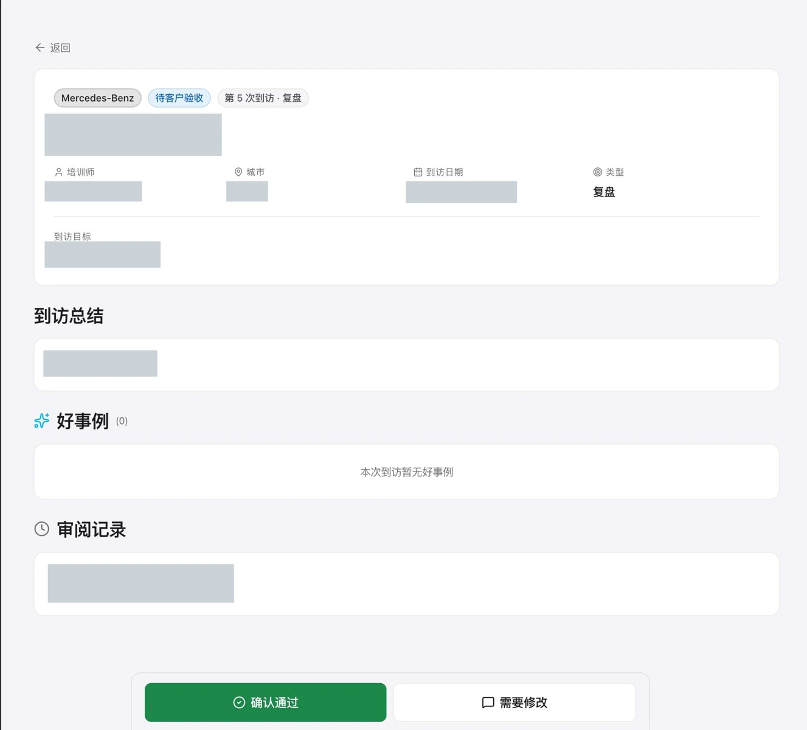

经销商辅导工作台
从安排到店，到客户确认成果，每次辅导都在同一条记录里跟进。
项目经理看排期和审核进度，培训师用手机查任务、交成果，客户查看已发布的报告并确认。
项目经理端 · 排期与审核
项目经理负责安排谁去、什么时候去，以及哪份成果可以交给客户。排期可按门店、培训师和状态筛选，同一位培训师撞期时，系统会阻止新增排期。培训师提交成果后，项目经理在审核台检查内容，可退回补充或发布给客户。


培训师端 · 到店执行与成果提交
支持手机端操作。培训师可在手机上查看下一次到访和待提交成果。到店后打开对应记录，整理到访总结、现场材料和好事例，再提交内部审核。提交后内容锁定，收到退回意见后可以继续修改。


客户端 · 查看进度与确认成果
客户查看项目进度和已发布的到访成果。项目经理发布报告后，这份报告才进入客户待办。客户可以确认通过或要求修改，项目团队按意见修订后，仍在同一条到访记录上重新提交。

我的工作与验证
我独立开发 MB Schedule，用于奔驰经销商辅导项目，把项目经理、培训师和客户各自的操作接到同一次到访记录上。
项目记录包含客户确认流程的本地验收，以及正式域名上的三角色登录、排期页面和权限验证。当前案例展示已交付的流程和界面。
以上为试用版截图，门店、人员和排期信息已按需遮盖。图片可点击放大。